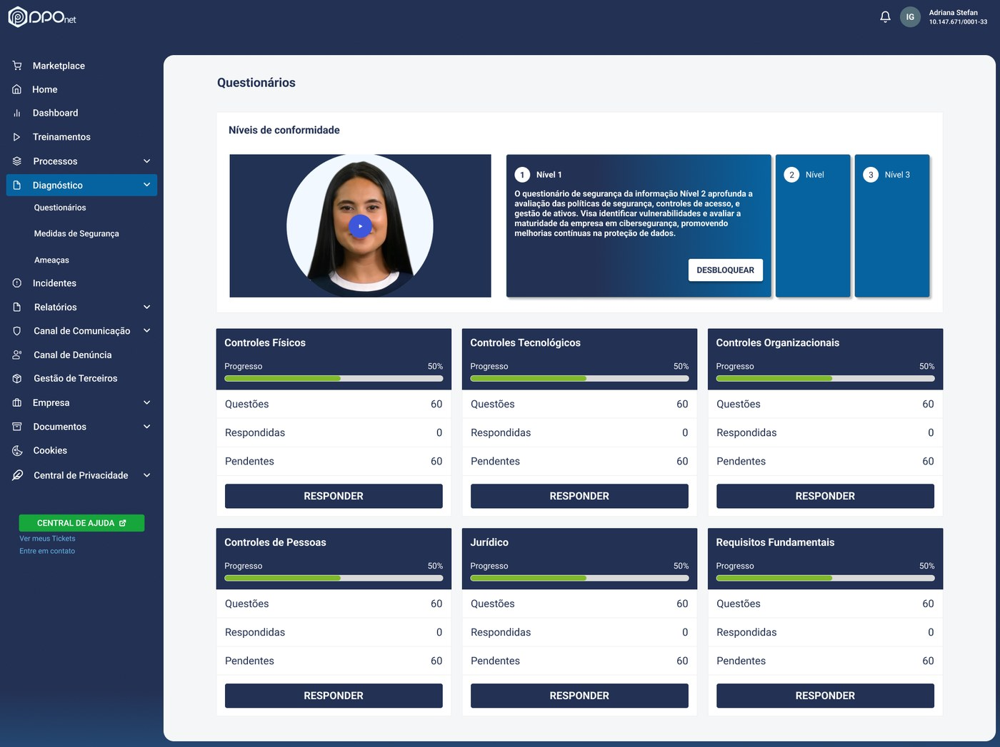
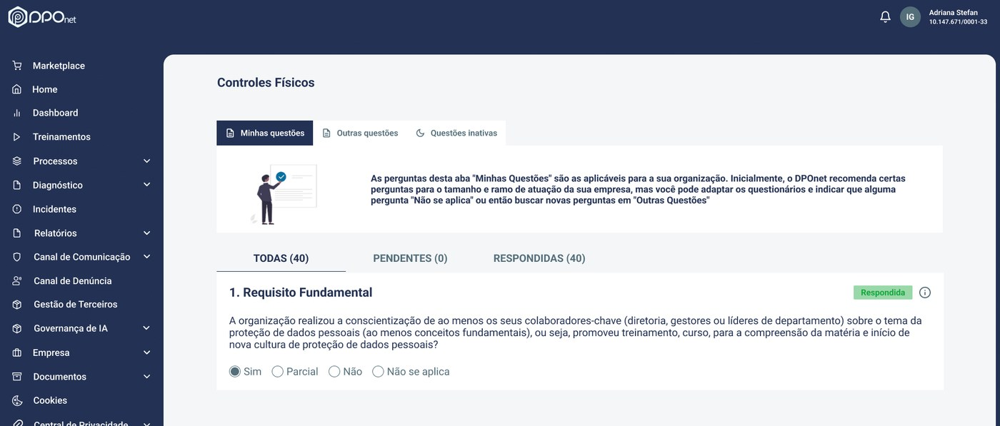

Na DPONet, plataforma de adequação à LGPD, um módulo inteiro de diagnóstico de conformidade estava sendo abandonado pelos usuários no meio do caminho. A causa não era falta de conteúdo — era a forma como esse conteúdo era entregue.
A DPONet é uma plataforma SaaS voltada à adequação à LGPD. Em um dos módulos, as empresas clientes precisam responder questionários extensos para avaliar seu nível de conformidade em segurança da informação e proteção de dados — a base para gerar o diagnóstico de risco da empresa.
O fluxo original era um único questionário extenso, sem divisão clara ou progressão visível. Isso criava uma experiência cansativa e pouco motivadora: os usuários tinham dificuldade em avançar e, em muitos casos, abandonavam o preenchimento no meio do caminho.
Sem marcos de progresso ou organização por temas, o escopo do diagnóstico parecia maior e mais complexo do que realmente era — o que aumentava a sensação de esforço antes mesmo do usuário começar a responder.
Questionários incompletos ou mal respondidos geravam excesso de itens classificados como risco, disparando um volume alto de RMCs (Registros de Não Conformidade) — muitos deles desnecessários.
Times de compliance sobrecarregados, tratando RMCs que na verdade refletiam abandono ou pressa no preenchimento, não risco real da empresa.
O fluxo foi transformado de um formulário único em uma jornada progressiva, aplicando princípios de gamificação normalmente associados a produtos de consumo — mas aqui a serviço de um contexto técnico e regulatório:

O diagnóstico foi dividido em níveis progressivos (1, 2 e 3), desbloqueados um a um, e em categorias temáticas com barra de progresso individual — Controles Físicos, Tecnológicos, Organizacionais, de Pessoas, Jurídico e Requisitos Fundamentais.

Dentro de cada categoria, as perguntas ficam organizadas em blocos menores, com abas de "Minhas questões", "Outras questões" e "Questões inativas", e contadores de pendentes/respondidas sempre visíveis — reforçando a sensação de progresso a cada resposta.
Um detalhe do fluxo de avanço de nível: ao concluir um nível, o sistema avisa que a atualização é irreversível — decisão deliberada para reforçar compromisso e reduzir avanços acidentais, mantendo a jornada como uma progressão real, não apenas visual.
A nova estrutura transformou um fluxo antes linear e cansativo em uma jornada progressiva e orientada a conquistas. Com blocos menores e elementos de gamificação, o diagnóstico deixou de ser percebido como uma tarefa longa e passou a incentivar avanço contínuo — reduzindo a fricção e aumentando o engajamento ao longo do preenchimento.
A melhoria na hierarquia da informação e no feedback de progresso também contribuiu para mais clareza e segurança nas respostas, tornando a experiência mais acessível mesmo para usuários não especialistas em segurança da informação.
Esse case documenta um projeto específico, mas meu papel na empresa foi mais amplo do que design de interface.
Gerenciamento de backlog, priorização de features e escrita de especificações funcionais e critérios de aceite para o time de desenvolvimento.
Discovery, design e especificação do fluxo de cobrança/assinatura, incluindo integração com gateway de pagamento.
Desenvolvimento de produtos internos para o time comercial, incluindo ferramentas de captação de leads.